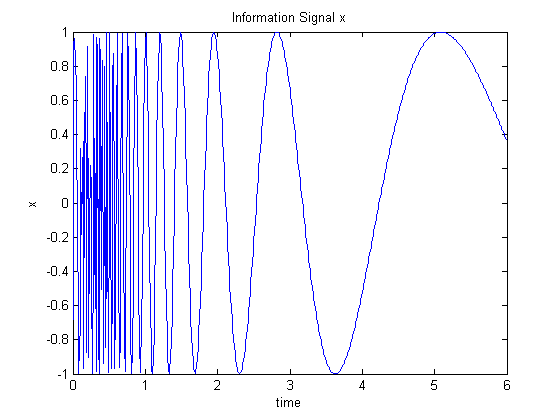
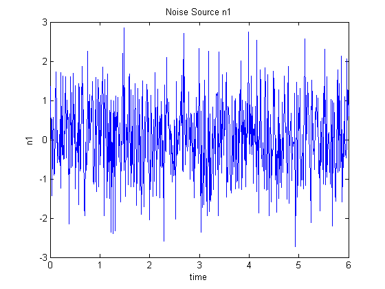
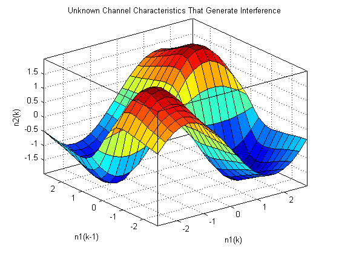
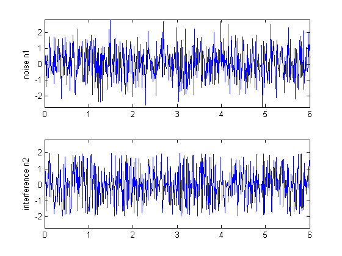
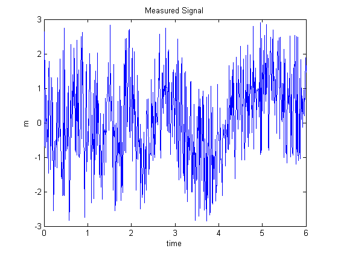
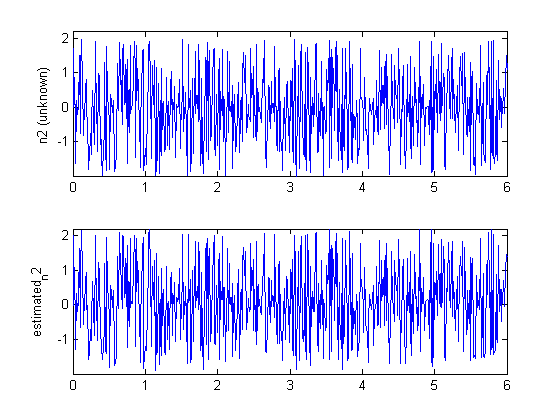
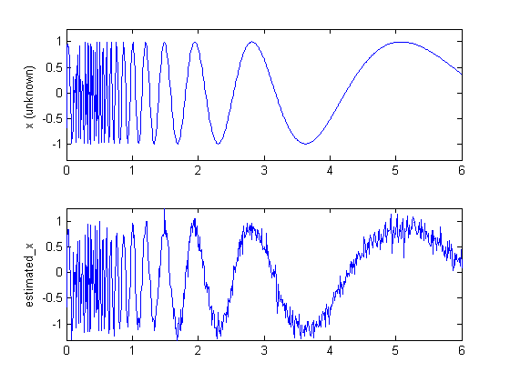

Adaptive Noise Cancellation
This is a demonstration of adaptive nonlinear noise cancellation using the Fuzzy Logic Toolbox functions ANFIS and GENFIS1.
Copyright 1994-2002 The MathWorks, Inc. $Revision: 1.13 $
Defined below is a hypothetical information signal x sampled at 100Hz over 6 seconds.
time = (0:0.01:6)'; x = sin(40./(time+0.01)); subplot(1,1,1) plot(time, x) title('Information Signal x') xlabel('time') ylabel('x')
Unfortunately, the information signal x cannot be measured without an interference signal n2, which is generated from another noise source n1 via a certain unknown nonlinear process.
Shown in the window is the noise source n1.
n1 = randn(size(time)); plot(time, n1) title('Noise Source n1') xlabel('time') ylabel('n1')
The interference signal n2 that appears in the measured signal is assumed to be generated via an unknown nonlinear equation:
n2(k) = 4*sin(n1(k))*n1(k-1)/(1+n1(k-1)^2)
This nonlinear characteristic is shown as a surface in the window.
domain = linspace(min(n1), max(n1), 20); [xx, yy] = meshgrid(domain, domain); zz = 4*sin(xx).*yy./(1+yy.^2); surf(xx, yy, zz); xlabel('n1(k)'); ylabel('n1(k-1)'); zlabel('n2(k)'); title('Unknown Channel Characteristics That Generate Interference'); axis([min(domain) max(domain) min(domain) max(domain) min(zz(:)) max(zz(:))]); set(gca, 'box', 'on');
The noise source n1 and interference n2 are shown together. Note that n2 is related to n1 via the highly nonlinear process shown previously; it is hard to see if these two signals are correlated in any way.
n1d0 = n1; % n1 delay 0 n1d1 = [0; n1d0(1:length(n1d0)-1)]; % n1 delay 1 n2 = 4*sin(n1d0).*n1d1./(1+n1d1.^2); % interference axis_limit = [min(time) max(time) min([n1;n2]) max([n1;n2])]; subplot(2,1,1) plot(time, n1); ylabel('noise n1'); axis(axis_limit); subplot(2,1,2) plot(time, n2); ylabel('interference n2'); axis(axis_limit);
The measured signal m is the sum of the original information signal x and the interference n2. However, we do not know n2. The only signals available to us are the noise signal n1 and the measured signal m, and our task is to recover the original information signal x. In the demo window is the measured signal m that combines x and n2.
m = x + n2; % measured signal subplot(1,1,1) plot(time, m) title('Measured Signal') xlabel('time') ylabel('m')
We will use the function ANFIS to identify the nonlinear relationship between n1 and n2. Though n2 is not directly available, we can take m as a "contaminated" version of n2 for training. Thus x is treated as "noise" in this kind of nonlinear fitting.
Here we assume the order of the nonlinear channel is known (in this case, 2), so we can use 2-input ANFIS for training. We assign two membership functions to each input, so the total number of fuzzy rules for learning is 4. Also we set the step size equal to 0.2. You should be able to see all the training information in the MATLAB command window.
delayed_n1 = [0; n1(1:length(n1)-1)]; trn_data = [delayed_n1 n1 m]; mf_n = 2; ss = 0.2; in_fismat=genfis1(trn_data, mf_n); out_fismat = anfis(trn_data, in_fismat, [nan nan ss]); estimated_n2 = evalfis(trn_data(:, 1:2), out_fismat); estimated_x = m - estimated_n2;
ANFIS info: Number of nodes: 21 Number of linear parameters: 12 Number of nonlinear parameters: 12 Total number of parameters: 24 Number of training data pairs: 601 Number of checking data pairs: 0 Number of fuzzy rules: 4 Start training ANFIS ... 1 0.72546 2 0.72285 3 0.720346 4 0.718132 5 0.71674 Step size increases to 0.220000 after epoch 5. 6 0.716081 7 0.71571 8 0.714969 9 0.714672 Step size increases to 0.242000 after epoch 9. 10 0.714149 Designated epoch number reached --> ANFIS training completed at epoch 10.
After training, the estimated n2 is calculated using the command EVALFIS. The original n2 and estimated n2 (output of ANFIS) are shown above. (Note that n2 is unknown.)
axis_limit = [min(time) max(time) min([n2; estimated_n2]) max([n2; estimated_n2])]; subplot(2,1,1) plot(time, n2) ylabel('n2 (unknown)'); axis(axis_limit); subplot(2,1,2) plot(time, estimated_n2) ylabel('estimated_n2'); axis(axis_limit);
The estimated information signal x is equal to the difference between the measured signal m and the estimated interference (that is, ANFIS output).
The original information signal x and the estimated x by ANFIS are plotted. Without extensive training, the ANFIS can already do a fairly good job.
axis_limit = [min(time) max(time) min([x; estimated_x]) max([x; estimated_x])]; subplot(2,1,1) plot(time, x) ylabel('x (unknown) '); axis(axis_limit); subplot(2,1,2) plot(time, estimated_x) axis(axis_limit); ylabel('estimated\_x')